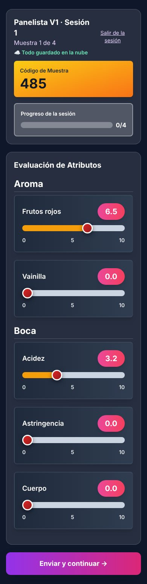
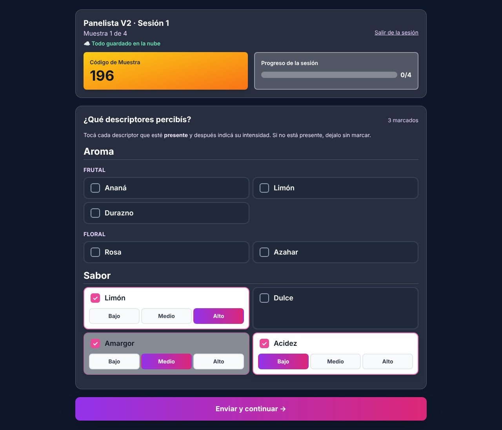
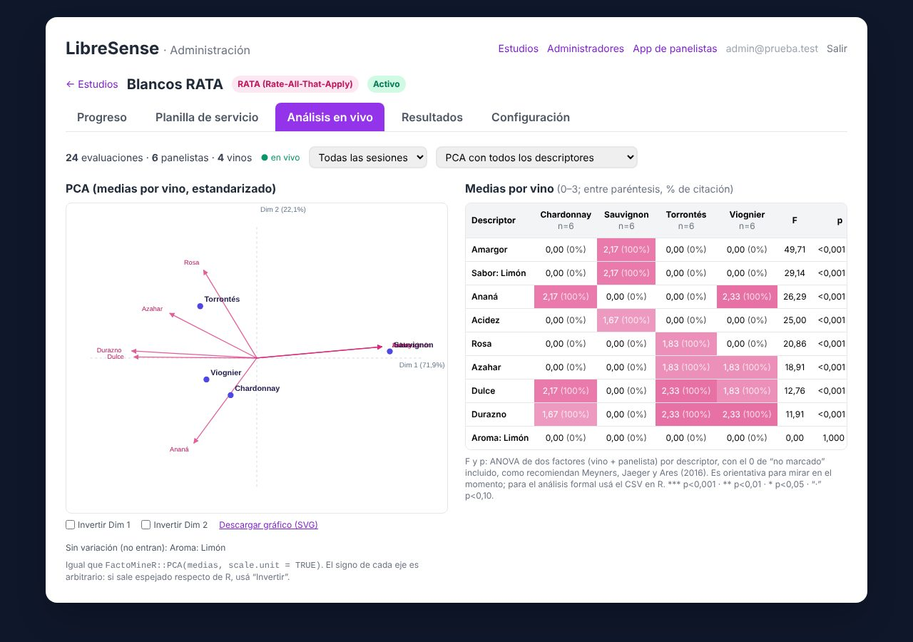
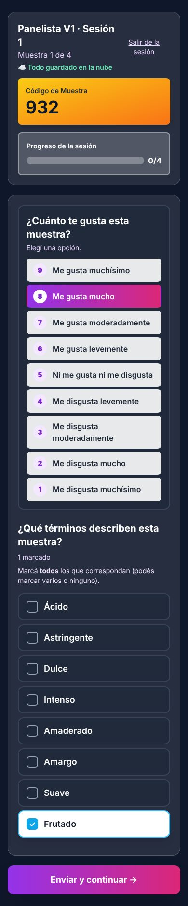
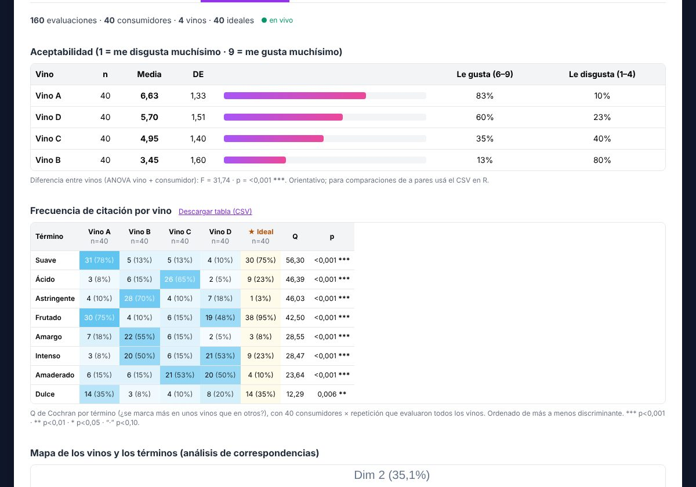
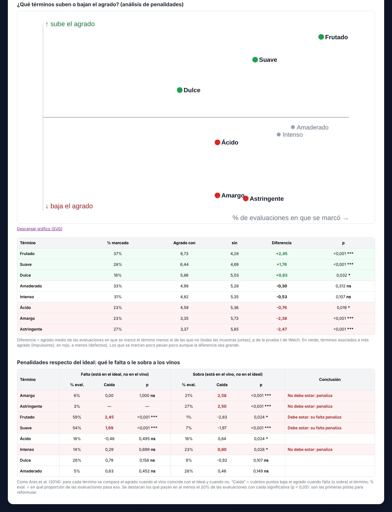
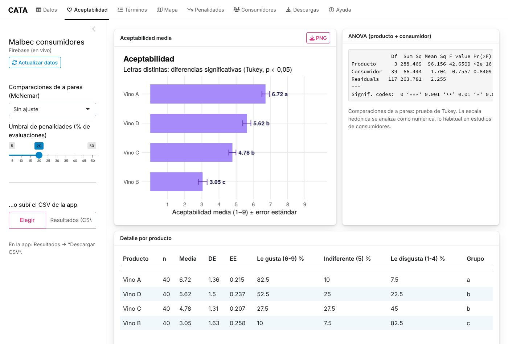
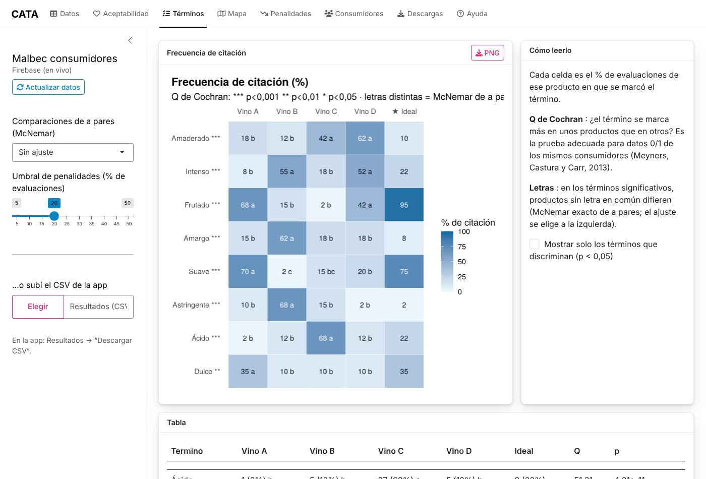

El perfil clásico: un panel entrenado puntúa la intensidad de una lista fija de atributos en una escala de 0 a 10.
PanelEntrenado (8–12 personas), con atributos y referencias acordados en sesiones previas.MuestrasDe a una, en orden de Williams, con código de 3 cifras. 4–8 vinos por sesión.Repeticiones2–3, para evaluar la repetibilidad del panel.DatosUn valor de 0 a 10 (con un decimal) por atributo, muestra y panelista.
Qué hace el panelista

ADC en el celular: un deslizador por atributo, agrupados por modalidad.
Para cada muestra ve el código y un deslizador de 0 a 10 por atributo. Mueve cada uno hasta la intensidad percibida; el valor aparece al lado con un decimal.
Los atributos que no toca quedan en 0 (ausente).
Al terminar toca Enviar y continuar. Puede volver a la muestra anterior y corregir.
El 0 cuenta
Un atributo sin mover se guarda como 0. Si un panelista se olvida de un atributo, ese 0 baja la media.
En el entrenamiento conviene insistir en revisar todos los deslizadores antes de enviar.
Análisis en vivo
Medias por vino de cada atributo, con un mapa de calor, y la prueba F de un ANOVA de dos factores (vino + panelista), con su valor p.
Los atributos se ordenan del más al menos discriminante.
PCA (análisis de componentes principales) sobre las medias, estandarizado (igual que FactoMineR::PCA con scale.unit = TRUE).
Se puede limitar a los atributos que discriminan (p < 0,05 o p < 0,10) y filtrar por sesión. El gráfico se descarga en SVG.
Cómo interpretarlo
Un atributo con p < 0,05 diferencia significativamente a los vinos. Uno con p alto no los diferencia (o el panel no lo usa de manera consistente).
En el PCA, los vinos cerca entre sí tienen perfiles parecidos; las flechas indican hacia dónde aumenta cada atributo. Un vino ubicado en la dirección de una flecha
tiene ese atributo por encima del promedio. Flechas en la misma dirección = atributos correlacionados; opuestas = inversamente relacionados.
El ANOVA en vivo es orientativo. Para el análisis formal (efecto panelista, interacción vino × panelista, repetibilidad, comparaciones de a pares) se usa el CSV en R
(capítulo 13), por ejemplo con SensoMineR::panelperf y decat.
7RATA (Rate-All-That-Apply)
Una variante de CATA con intensidad: el panelista marca solo los descriptores presentes y les asigna una intensidad (bajo, medio, alto).
PanelSemi-entrenado o entrenado; también funciona con consumidores (más numerosos).MuestrasDe a una, Williams, código de 3 cifras.Escala3 puntos (bajo · medio · alto) o 5 puntos.Datos0 si el descriptor no se marcó; 1, 2, 3 (o 1–5) según la intensidad elegida.
RATA permite listas largas (20–40 descriptores) sin que el panelista tenga que puntuar todo: solo trabaja con lo que percibe. Es más rápido de entrenar que el ADC
y discrimina mejor que CATA porque agrega la intensidad.

RATA: al tocar un descriptor se abre la escala de intensidad.
Qué hace el panelista
Toca cada descriptor presente; se abre la escala y elige la intensidad. Si toca un descriptor y no elige intensidad, la app no le deja enviar la muestra y le marca cuál falta.
Para desmarcar, vuelve a tocar el descriptor.
Análisis en vivo
Medias por vino (con el 0 de “no marcado” incluido) y, entre paréntesis, el % de citación (cuántas veces se marcó).
ANOVA por descriptor y PCA, como en el ADC. Además se puede hacer el PCA solo con los descriptores citados al menos el 10% de las veces en algún vino.
Por qué se incluye el 0
Meyners, Jaeger y Ares (2016) mostraron que conviene analizar RATA tratando “no marcado” como 0 en la misma escala
(0 = ausente, 1–3 = intensidad). Analizar solo las intensidades de quienes marcaron el descriptor pierde información y sesga las comparaciones.

Análisis en vivo de un RATA: PCA y tabla de medias con el % de citación.
8CATA con aceptabilidad
Para consumidores: cuánto les gusta cada vino y qué términos lo describen. Con la pregunta del vino ideal, dice además qué le falta y qué le sobra a cada vino.
PanelConsumidores, sin entrenamiento: al menos 50–100 (Ares y Jaeger, 2015).MuestrasDe a una, Williams. Lo habitual: una sola sesión con todas las muestras, 1 repetición.Términos10–40, simples y entendibles por consumidores (de un estudio previo, la bibliografía o preguntas abiertas). Orden al azar por consumidor.DatosAceptabilidad de 1 a 9; cada término 1 (marcado) o 0. Opcional: el ideal de cada consumidor (mismos términos, una vez).
Configuración
Preguntar cuánto le gusta (escala hedónica de 9 puntos): necesario para las penalidades. Se pregunta antes de la lista, para que los términos no influyan en el agrado.
Vino ideal: al terminar sus muestras, cada consumidor marca los términos que tendría el vino de ese tipo que más le gustaría. Se pregunta una sola vez.
El nombre “Aceptabilidad” está reservado para la escala: no se puede usar como término.
Qué hace el consumidor

Primero el agrado (1 a 9), después los términos.Al final, el vino ideal.
Elige una opción de la escala (“Me gusta mucho”, “Ni me gusta ni me disgusta”…; sin ella no puede seguir) y marca todos los términos que correspondan, varios o ninguno.
Si cerró la app antes de responder el ideal, en su lista de sesiones aparece “Falta una pregunta: tu vino ideal”.
Análisis en vivo

Aceptabilidad y frecuencia de citación, con la Q de Cochran de cada término.
Aceptabilidad
Media, desvío, % de consumidores a los que les gusta (6–9) y les disgusta (1–4), y la prueba F de un ANOVA vino + consumidor.
Mirá las dos cosas: dos vinos con la misma media pueden tener uno que divide opiniones (mucho “me gusta” y mucho “me disgusta”) y otro que no entusiasma a nadie.
Frecuencia de citación y Q de Cochran
Cuántos consumidores marcaron cada término para cada vino (y para el ideal). La Q de Cochran prueba si un término se marca más en unos vinos que en otros;
es la prueba adecuada para datos 0/1 de los mismos consumidores (Meyners, Castura y Carr, 2013). Los términos aparecen ordenados del más al menos discriminante.
Mapa de correspondencias
Ubica vinos y términos en un mismo mapa: cada vino queda cerca de los términos que más se usaron para describirlo. El ideal (★) se proyecta sobre el mapa sin modificarlo:
los vinos más cercanos a la estrella son los más parecidos a lo que buscan los consumidores. La prueba χ² indica si las diferencias entre vinos en la tabla son significativas.
Penalidades: qué sube y qué baja el agrado
Para cada término se compara la aceptabilidad media de las evaluaciones en que se marcó con la de las que no (t de Welch). En el gráfico, el eje horizontal es cuántas veces se marcó
y el vertical la diferencia de agrado:
Arriba (verde): impulsores del agrado. Si además están a la derecha (se marcan mucho), son atributos clave.
Abajo (rojo): defectos o atributos que restan.
Cerca del cero (gris): no se asocian con el agrado.

Impacto de cada término en la aceptabilidad y penalidades respecto del ideal.
Penalidades respecto del ideal
Siguiendo a Ares y colaboradores (2014), para cada término se separan dos situaciones:
Falta: el consumidor lo quiere (está en su ideal) y el vino no lo tiene. Si en esos casos el agrado cae, el término “debe estar”.
Sobra: el vino lo tiene y el consumidor no lo quiere. Si el agrado cae, el término “no debe estar”.
Se destacan los que ocurren en al menos el 20% de las evaluaciones y con una caída significativa (p < 0,05): son las primeras pistas para reformular un producto.
Asociación no es causa
Que “astringente” baje el agrado no significa que sacar astringencia lo vaya a subir: los términos aparecen juntos
(un vino astringente quizás también es amargo y poco frutado). Las penalidades marcan dónde mirar; la decisión se confirma con un nuevo ensayo.
Análisis completo en R
El botón Análisis completo en R (Shiny) abre acatania.shinyapps.io/cata con los datos del estudio. Agrega:
Aceptabilidad: medias con letras de la prueba de Tukey (vinos con la misma letra no difieren), tabla del ANOVA y distribución de las respuestas en la escala.
Términos: mapa de calor con letras de McNemar de a pares en cada término significativo (con ajuste de Holm o Bonferroni opcional).
Mapa: correspondencias con el ideal y la dirección de la aceptabilidad como flecha (variable suplementaria).
Penalidades para todos los vinos o para uno en particular, con un umbral ajustable, y la diferencia de cada vino con el ideal, término por término.
Consumidores: mapa de preferencias interno (cada consumidor es una flecha que apunta a los vinos que más le gustaron) y segmentos de consumidores con gustos distintos,
con los términos que valora cada segmento.
Informe en Word o HTML, Excel con todas las tablas y el código R equivalente.

Shiny CATA: aceptabilidad con letras de Tukey.

Shiny CATA: frecuencias con letras de McNemar.
Los segmentos importan
Si un vino tiene una media de agrado intermedia, mirá la pestaña Consumidores: puede ser que a un grupo le encante y a otro no.
Un vino “promedio” para todos y un vino que enamora a un 40% de los consumidores son decisiones comerciales muy distintas.